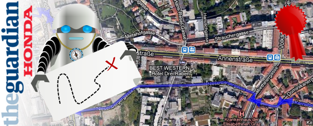

(2011) Award winning adventure generator for wannabe urban flâneurs

In 2011 I was recruited for a Rewired State hack on experimental prototype applications for Honda, as part of the Honda/Guardian “Dream Factory” event.
Along with the Corridor of Dreams, I made GetLostBot, a free service that challenges you to break your routine and explore new places. Once you sign up, GetLostBot will quietly keep an eye on the places you visit. If it feels that you are going to the same places too often, it will send you a challenge. When this happens, you will receive a message with some mysterious walking directions. Follow these to discover a place nearby that you have never been to before!
GetLostBot uses the Foursquare API to track user checkins and examines recent behaviour. If the user has fallen into a routine, it finds a nearby location they haven’t visited and creates a challenge for them. It sends the user a tweet or email with a link to an unmarked map with walking directions to the new place. Importantly, it doesn’t tell the user where they will end up! The user is forced to “venture into the unknown” and follow the directions in an adventurous spirit.
Interestingly, although the idea is very appealing to people ("explore the unknown!"), in our studies of actual app usage the system uncovers some interesting reactions. People don't actually like being reminded of how repetitive their life is, even though they asked for those reminders. Users are extremely engaged with the idea of being more free and serendipitous, but in reality are extremely resistant to it. Only a small percentage of challenges are ever completed. My favourite anecdote is the user that complained the app kept telling them to stop going to their church every Sunday and suggested a nearby mosque instead. The user thought it was a bug but I think it is a feature. There is more on this in the papers linked below.
GetLostBot won the Honda Dream Factory prize in the evolution category, and has since been featured in a wide number of press, including a special feature in New Scientist, Wired, Metro, the Guardian and a bunch of places online. GetLostBot also came second place in a public vote for the best new project by Guardian readers.
Ben Kirman (2012) “get lost, GetLostBot!”: annoying people by offering recommendations when they are not wanted. In Proceedings of the 2012 RecSys workshop on Personalizing the local mobile experience (LocalPeMA ’12). 13 September 2012, Dublin, Ireland (pdf, slides)
Ben Kirman, Conor Linehan, and Shaun Lawson. (2012) Get lost: facilitating serendipitous exploration in location-sharing services. In Proceedings of the 2012 ACM annual conference extended abstracts on Human Factors in Computing Systems (CHI EA ’12) 5-10 May, 2012, Austin, Texas (ACM)
Ben Kirman, Conor Linehan and Shaun Lawson (2018) Reorienting Geolocation Data through Mischievous Design. In Mark Blythe and Andrew Monk (Eds) Funology 2: From Usability to Enjoyment. Springer.